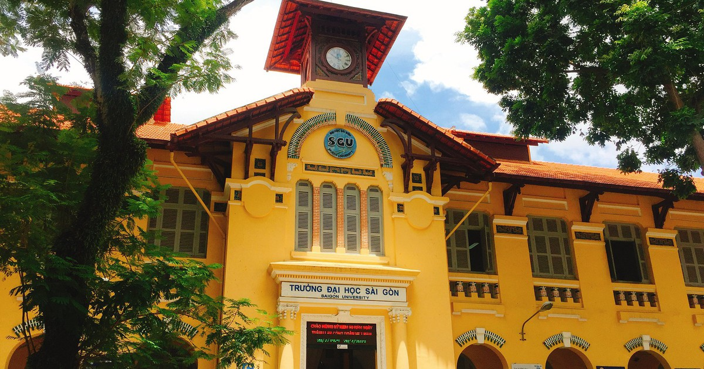
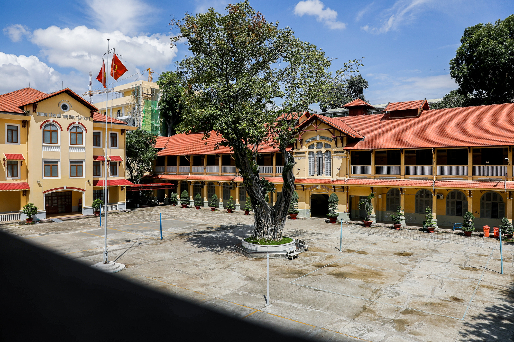
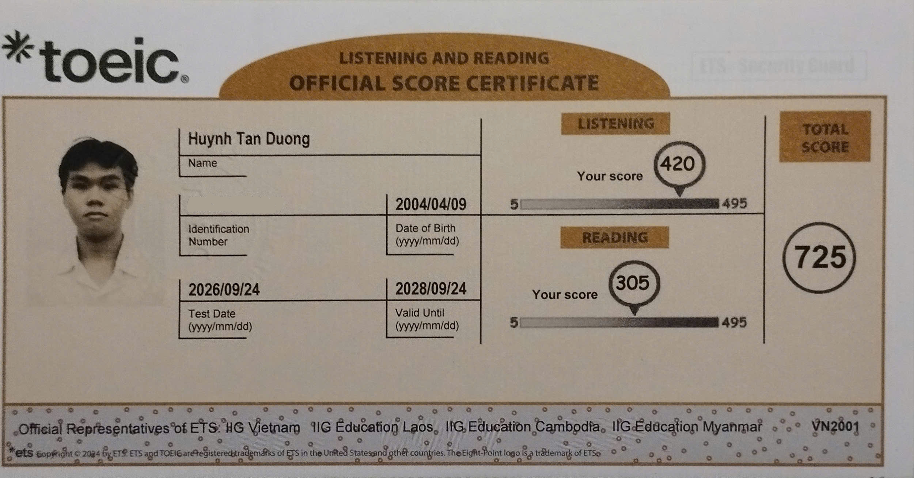
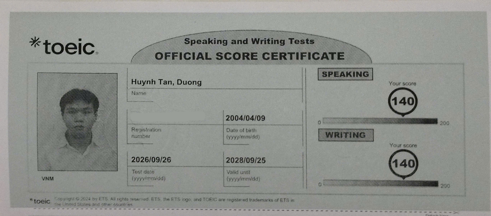

09/2022 – Hiện tại
Đại học Sài Gòn
Kỹ sư Công nghệ Thông tin - chuyên ngành Kỹ thuật Máy tính
ĐIỂM TRUNG BÌNH TÍCH LŨY
3.42 / 4.08.48 / 10
CHỨNG CHỈ · NGOẠI NGỮ
Kết quả TOEIC

TOEIC · L&RNghe & Đọc
725/ 990
Điểm tối đa: 990

TOEIC · S&WNói & Viết
280/ 400
Điểm tối đa: 400
Định hướng chuyên môn: hạ tầng mạng, routing & switching, vận hành Network/NOC; tiếp đến là quản trị hệ thống máy chủ.